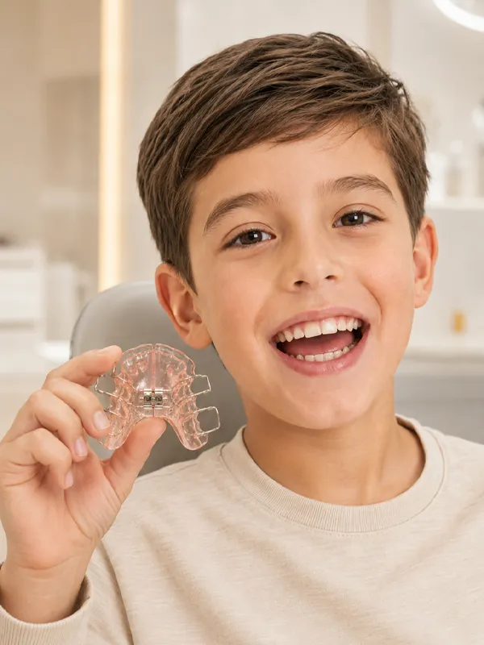
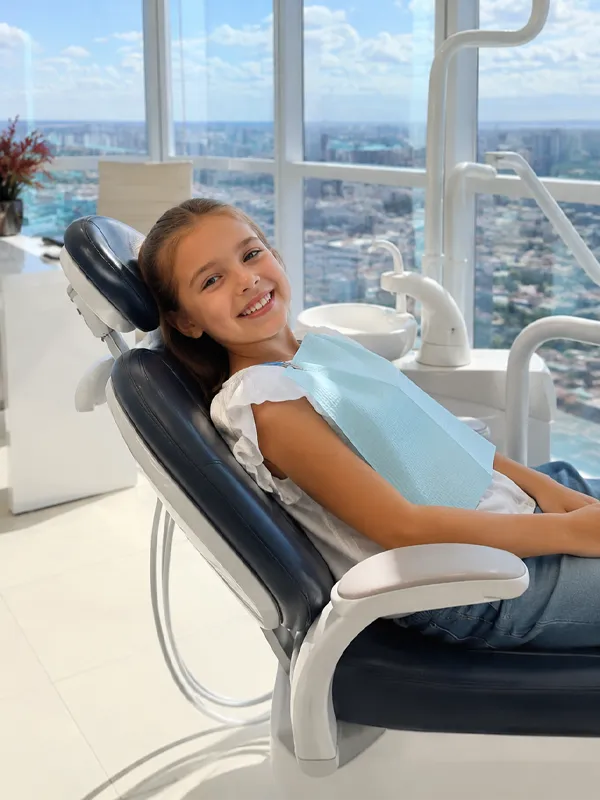

Desenvolvimento das arcadas
Acompanha o crescimento das estruturas que sustentam o sorriso.
Tratamentos ortodônticos e ortopédicos personalizados para cada fase do crescimento, com acompanhamento profissional e planejamento individualizado.
Crescimento em acompanhamento
A avaliação ortodôntica infantil não observa somente dentes tortos. Ela ajuda a acompanhar o desenvolvimento do sorriso enquanto a criança cresce, permitindo entender se existe necessidade de intervenção ou apenas monitoramento profissional.
Acompanha o crescimento das estruturas que sustentam o sorriso.
Verifica se há espaço adequado para a troca e nascimento dos dentes.
Identifica alterações de posição que podem influenciar a mordida.
Avalia a relação entre as bases ósseas durante o desenvolvimento.
Observa mordida cruzada, aberta, profunda ou outras alterações funcionais.
Define se é hora de tratar ou se o melhor caminho é acompanhar o crescimento.
Opções disponíveis
Cada aparelho tem uma indicação específica. A escolha é feita após avaliação do crescimento, da mordida e da fase de desenvolvimento da criança ou adolescente.

Cuidado durante o crescimento
Os aparelhos ortopédicos podem ser indicados durante determinadas fases do desenvolvimento infantil para auxiliar na correção de alterações relacionadas ao crescimento dos maxilares e à mordida.
Nem toda alteração ortodôntica precisa esperar a adolescência para ser avaliada. Cada caso precisa ser observado individualmente para definir o momento e o tratamento mais adequado.
Benefícios
Acompanha o crescimento do sorriso
Ajuda na harmonia facial e dentária
Orienta a correção da mordida
Favorece a higiene durante a troca dos dentes
Contribui para mais confiança ao sorrir
Planejamento conforme a fase de crescimento

Atendimento particular
A Premium Care Odontologia realiza atendimentos particulares para crianças e adolescentes, com avaliação individualizada da mordida, dos dentes e do crescimento facial. A proposta é oferecer uma experiência próxima, cuidadosa e segura para a família, desde o primeiro contato até o acompanhamento do tratamento.
Nossa estrutura
Ambientes pensados para receber crianças, adolescentes e responsáveis com conforto, acolhimento e tranquilidade em cada etapa do atendimento.
Ambiente preparado para receber famílias
A Premium Care une atmosfera acolhedora, consultórios equipados e uma experiência pensada para que pais e filhos se sintam orientados, confortáveis e seguros desde a chegada até o acompanhamento ortodôntico.

Especialista em ortodontia
A Dra. Alessandra Cardoso Rezende atua com ortodontia infantil e acompanha crianças e adolescentes, avaliando cada caso de forma individual para indicar o momento e a opção de tratamento mais adequada.
O acompanhamento ortodôntico considera o desenvolvimento dos dentes, a mordida, o crescimento facial e a rotina da família, sempre com orientação clara aos responsáveis em cada etapa do tratamento.
Diferenciais
A avaliação é conduzida pela Dra. Alessandra, com atenção ao desenvolvimento dentário, à mordida e ao crescimento facial.
O acompanhamento considera a idade, a fase de troca dos dentes e as necessidades específicas de cada etapa do crescimento.
Os responsáveis recebem explicações sobre o diagnóstico, as possibilidades de tratamento e o melhor momento para intervir.
Cada criança ou adolescente é avaliado de forma única, considerando mordida, arcadas, hábitos, rotina e evolução do sorriso.
As revisões ajudam a monitorar mudanças na dentição e nos maxilares, definindo se é preciso tratar ou apenas acompanhar.
A Premium Care fica no JK Shopping, entre Taguatinga e Ceilândia, com fácil acesso para famílias de Brasília e região.
Avaliação infantojuvenil
Fale com a equipe da Premium Care Odontologia e agende uma avaliação para crianças e adolescentes.
Ortodontia para crianças e adolescentes • JK Shopping • Taguatinga/DF